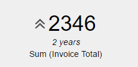
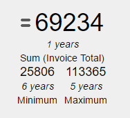

Query Card Type
A Card is an output type which can be configured at the Type property of the QueryViewer control or Query object preview to show the result of a query. This type of output it's usually used to show KPI (Key Performance Indicator) as a percentage of a target value or both. For a query to be shown in a Card, it has to contain an aggregated attribute in the Data section (property Axis = Data) at least. One indicator propertiesIf the Query object includes a Date or DateTime attribute, trending can be shown by setting the Include Trend Property in True. The trending it's shown with an arrow at the left of the value:  Also, a Sparkline can be displayed by setting the Include Sparkline Property in True: When using a Card output for a Query sometimes can be useful to know the Minimum and Maximum value taken by the indicator. This can be accomplished by setting the Include Max and Min Property in True:  Two indicator propertiesIf the query has more than one indicator defined, as shown in the preceding query, orientation can be set by choosing the corresponding value for the Orientation Property: Horizontal: Vertical: Note: all the properties defined for one indicator's queries can also be applied to two indicator's queries. CustomizationThe Card output type can be configurated using the QueryViewer theme class Where: Container class allows selecting a Table class to set the container's aesthetics. Value class allows selecting a TextBlock class to set the value's aesthetics. Title class allows choosing a TextBlock class to set the title's aesthetics. Trend image class allows selecting a Section class to set the image's aesthetics (not the image itself). Upward trend image, Downward trend image, and Sideward trend image allows selecting the image to be shown when the trending is growing, decreasing or equal. For example, after setting the above properties, a KPI can look as the following image:
|